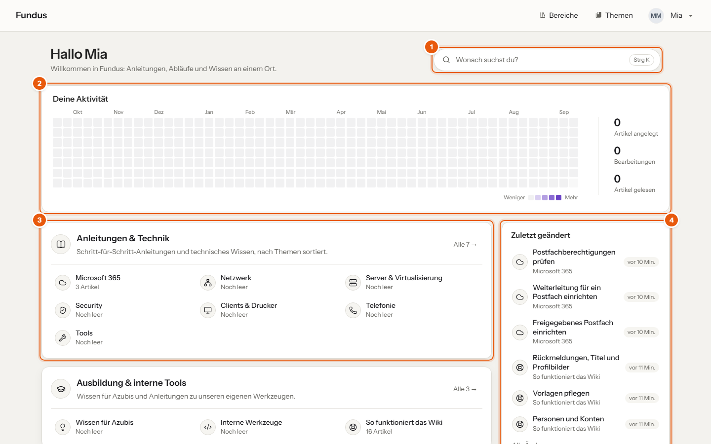

Fundus ist unser Wiki und unser gemeinsames Gedächtnis: Anleitungen, Abläufe und das Wissen über unsere Kunden an einem Ort, für alle auffindbar und aktuell. Der Name verbindet Fundus mit der Bibliothek von Alexandria. Auch die KI, die dir Fragen aus dem Wiki beantwortet, heißt Fundus.
Alles ist von groß nach klein geordnet:
| Ebene | Wofür | Beispiel |
|---|---|---|
| Bereich | großes Themenfeld | Anleitungen & Technik |
| Thema | ein Fachgebiet oder ein Kunde | Microsoft 365 |
| Abschnitt | Unterthema, optional | Exchange Online |
| Artikel | der eigentliche Text | Freigegebenes Postfach einrichten |
Es gibt vier Bereiche:

Du meldest dich mit deinem Firmenkonto an. Was du sehen und bearbeiten darfst, hängt von deiner Rolle ab:
| Rolle | Darf |
|---|---|
| Mitarbeiter | alles lesen außer Kunden; Artikel in Anleitungen und Prozessen anlegen und bearbeiten |
| Azubi | wie Mitarbeiter; einzelne Kundenthemen, wenn sie freigegeben sind |
| Technik | alles lesen und bearbeiten, auch Kunden |
| Redaktion | zusätzlich Bereiche und Themen anlegen, Vorlagen und Rechte pflegen |
Du findest einen Artikel nicht, obwohl es ihn geben müsste? Dann fehlt dir wahrscheinlich das Leserecht. Mehr dazu in „Ich sehe etwas nicht“.
Was du speicherst, ist sofort für alle sichtbar. Das Wiki merkt sich aber jede Fassung eines Artikels, und jede frühere Version lässt sich mit zwei Klicks zurückholen. Trau dich also, Artikel zu verbessern.